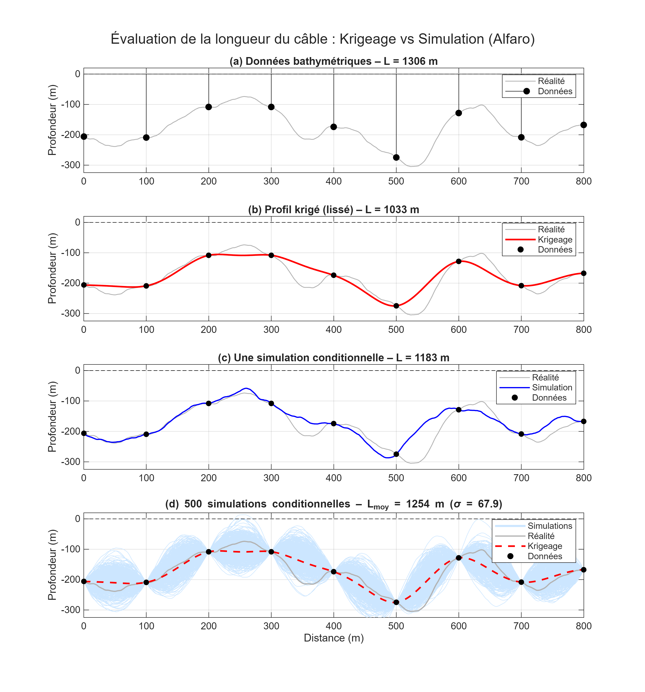
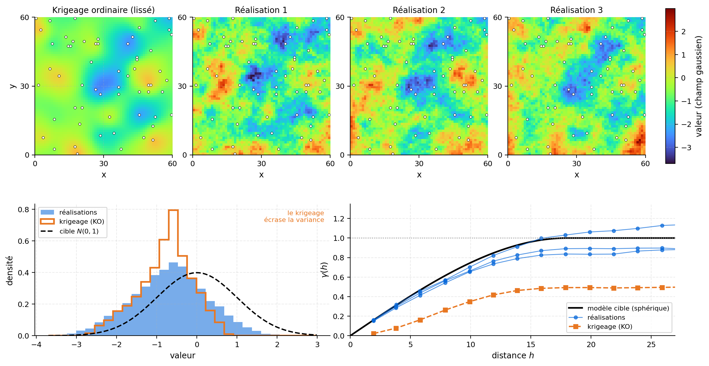
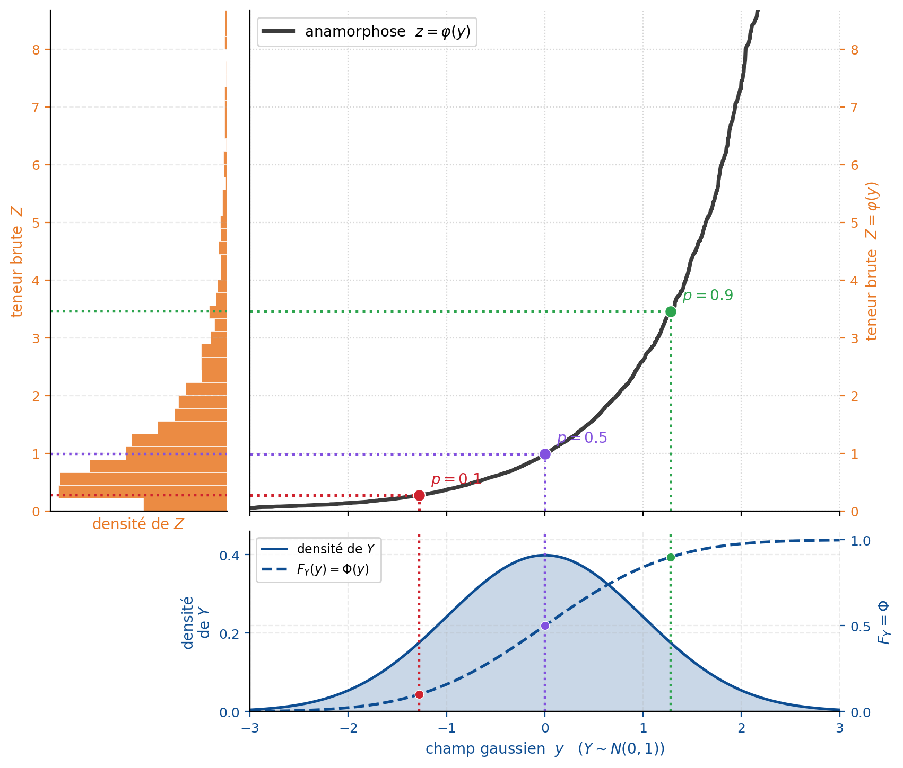
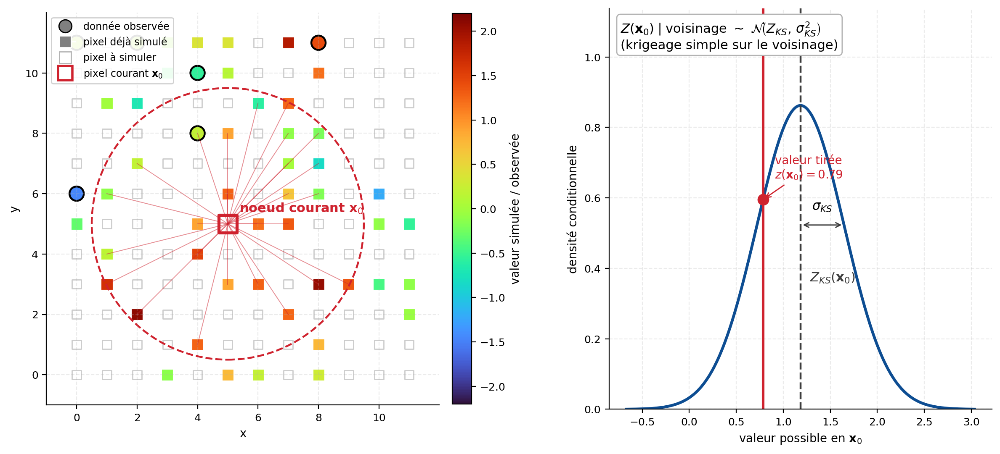
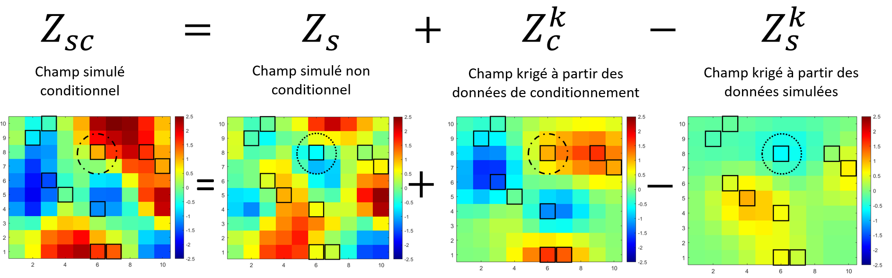
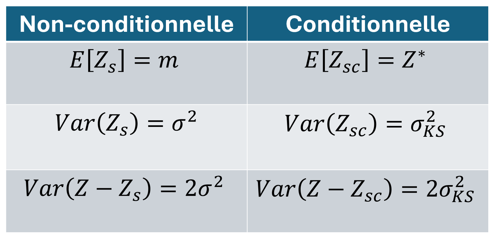
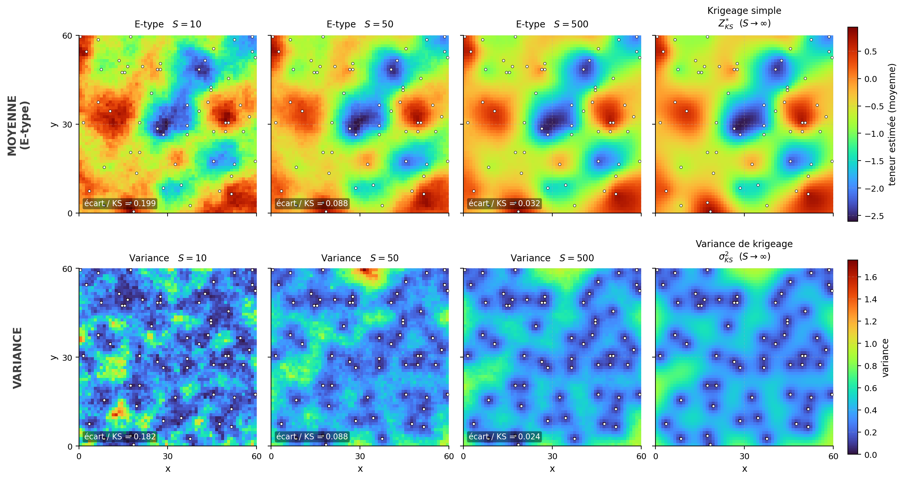
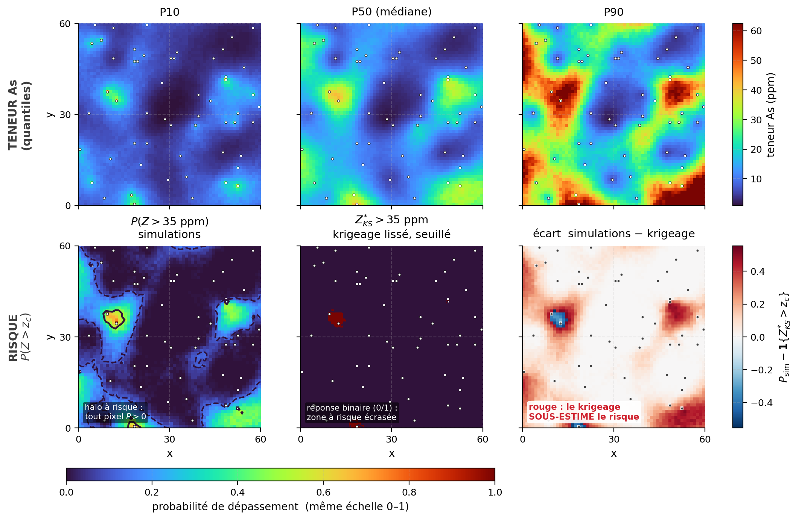
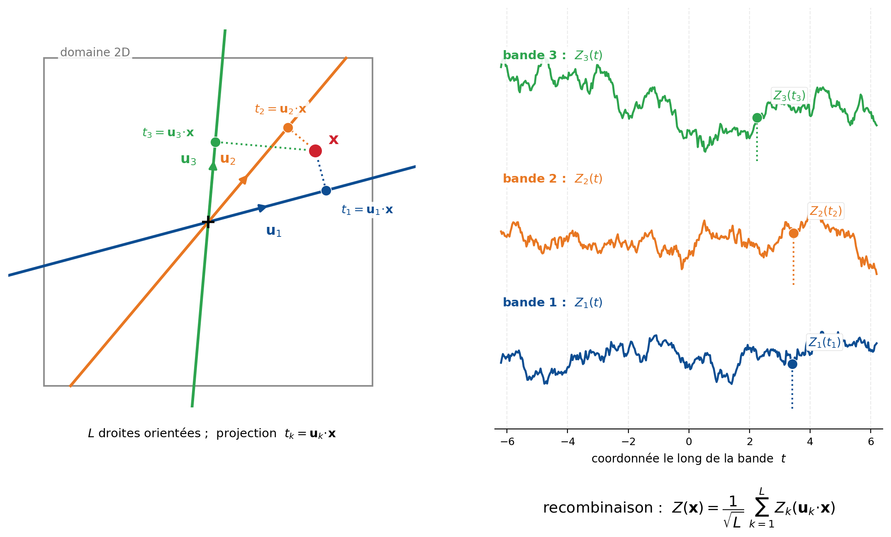

12 Simulations géostatistiques de variable continue
Ce chapitre présente les principes et les applications des simulations géostatistiques pour la modélisation de variables spatiales continues. Leur principal intérêt réside dans leur capacité à quantifier l’incertitude et à produire des représentations spatiales qui reproduisent la variabilité observée dans les données de terrain. La distinction entre estimation et simulation est d’abord établie, puis les cas conditionnel et non conditionnel sont détaillés. Les principaux algorithmes, notamment la décomposition de Cholesky et la simulation gaussienne séquentielle, sont ensuite présentés. Le chapitre expose également les critères guidant le choix de la méthode la mieux adaptée au contexte étudié et souligne les limites propres à chaque approche.
À la fin de ce chapitre, vous serez en mesure de :
Identifier les problèmes pour lesquels les méthodes de simulation géostatistique sont appropriées;
Distinguer les concepts d’estimation et de simulation, ainsi que leurs objectifs respectifs;
Expliquer les différences entre les simulations non conditionnelles et conditionnelles;
Appliquer les méthodes de simulation de Cholesky et de simulation séquentielle gaussienne (SGS), et en discuter les avantages et les limites;
Utiliser et interpréter les résultats de simulations dans le cadre de l’estimation des ressources;
Expliquer les principales propriétés statistiques et spatiales des simulations.
Ce chapitre s’appuie principalement sur les ouvrages suivants :
Lantuéjoul, C. (2002). Geostatistical Simulation: Models and Algorithms. Springer.
Chilès, J., & Delfiner, P. (2012). Geostatistics: Modeling Spatial Uncertainty. John Wiley & Sons.
12.1 Notations et hypothèses
On modélise la variable régionalisée par un champ stochastique \({Z(\mathbf{x}) : \mathbf{x}\in\mathcal{D}}\) défini sur un domaine \(\mathcal{D}\subset\mathbb{R}^n\). Le krigeage et la simulation géostatistique reposent sur ce même modèle spatial, mais répondent à des objectifs différents : le krigeage cherche une estimation optimale, tandis que la simulation génère plusieurs configurations possibles du champ conditionnellement aux données.
Problématique du câble sous-marin (Alfaro, 1979)
L’exemple proposé par Alfaro (1979) illustre directement cette distinction. Supposons que l’on cherche à estimer la longueur d’un câble posé sur le fond marin à partir de données bathymétriques mesurées tous les \(100,\text{m}\) le long d’un profil.
Une première approche consiste à kriger la profondeur entre les observations, puis à calculer la longueur de la courbe estimée. On obtient alors :
\[ L_{\mathrm{krigeage}}=945,\text{m}. \]
Un levé beaucoup plus dense, réalisé tous les \(10,\text{m}\), révèle toutefois une longueur de :
\[ L_{\mathrm{réelle}}=1182,\text{m}. \]
Cet écart résulte du lissage produit par le krigeage. Les variations de petite échelle et les valeurs extrêmes sont atténuées, de sorte que le profil estimé est plus régulier et, dans ce cas, artificiellement plus court. La longueur étant une fonctionnelle non linéaire du profil, elle ne peut généralement pas être évaluée correctement à partir de la seule estimation krigée.
La simulation conditionnelle propose une autre approche. Après avoir modélisé la loi marginale et la continuité spatiale de \(Z(\mathbf{x})\), on génère plusieurs profils compatibles avec les observations et avec le modèle géostatistique. Chaque réalisation présente des détails différents entre les points mesurés, tout en demeurant plausible compte tenu des données disponibles.
La longueur est calculée séparément sur chaque réalisation :
\[ L^{(s)}=L\left(Z^{(s)}\right), \]
puis son espérance conditionnelle est estimée par la moyenne des résultats :
\[ \mathbb{E}[L\mid\mathcal{D}] \approx \frac{1}{S}\sum_{s=1}^{S}L\left(Z^{(s)}\right), \]
où \(\mathcal{D}\) représente les données observées. La dispersion des valeurs \(L^{(s)}\) permet également de quantifier l’incertitude associée à la longueur du câble.

Estimation ou simulation
En estimation, la valeur krigée au point \(\mathbf{x}_0\) est une combinaison linéaire des observations :
\[ Z^*(\mathbf{x}0)=\sum{i=1}^{n}\lambda_iZ(\mathbf{x}_i). \]
Les poids sont déterminés de manière à minimiser la variance de l’erreur sous les contraintes propres au type de krigeage utilisé. Le résultat constitue le meilleur prédicteur linéaire sans biais, ou BLUP. Dans un cadre multigaussien avec moyenne connue, le krigeage simple coïncide avec l’espérance conditionnelle :
\[ \mathbb{E}\left[ Z(\mathbf{x}_0) \mid Z(\mathbf{x}_1),\ldots,Z(\mathbf{x}_n) \right]. \tag{12.1}\]
Cette moyenne conditionnelle fournit une estimation ponctuelle optimale, mais elle ne représente pas toute la distribution conditionnelle. Les valeurs extrêmes sont atténuées et la variabilité spatiale de la carte krigée est inférieure à celle du champ modélisé.
En simulation conditionnelle, une réalisation est plutôt tirée de la distribution du champ sachant les observations :
\[ Z^{(s)}(\mathbf{x}) \sim p\left( Z(\mathbf{x}) \mid Z(\mathbf{x}_1),\ldots,Z(\mathbf{x}_n) \right). \tag{12.2}\]
Les réalisations ne cherchent pas à minimiser l’erreur en chaque point. Elles représentent différents scénarios possibles entre les observations. Considérées collectivement, elles reproduisent la loi marginale et la structure de dépendance spatiale du modèle (Figure 12.2). En l’absence d’erreur de mesure, elles honorent également les valeurs observées aux points de conditionnement.

Pour un grand nombre de simulations indépendantes, leur moyenne ponctuelle converge vers la moyenne conditionnelle. Dans le cadre multigaussien du krigeage simple :
\[ \lim_{S \to \infty} \frac{1}{S} \sum_{s=1}^S Z^{(s)}(\mathbf{x}) = Z^*_{\text{SK}}(\mathbf{x}) \tag{12.3}\]
Le krigeage simple est donc la « moyenne » de toutes les réalisations possibles, ce qui explique son caractère lissé. La relation est exacte pour le krigeage simple (moyenne connue), seulement approchée pour le krigeage ordinaire.
Le tableau suivant résume les propriétés comparées.
| Propriété | Krigeage \(Z^*(\mathbf{x})\) | Simulation \(Z^{(s)}(\mathbf{x})\) |
|---|---|---|
| Objectif | Fournir une estimation ponctuelle optimale | Générer des scénarios plausibles |
| Variance spatiale | \(\operatorname{Var}[Z^*] < \operatorname{Var}[Z]\) (sous-estimée) | \(\operatorname{Var}[Z^{(s)}] = \operatorname{Var}[Z]\) (préservée) |
| Variogramme | Partiellement reproduit (lissage) | Intégralement reproduit |
| Conditionnement | Exact aux observations | Exact aux observations |
| Valeurs extrêmes | Atténuées | Préservées |
| Erreur ponctuelle | Minimale (variance de krigeage) | Plus élevée qu’une estimation |
| Fonctionnelles non linéaires | Biaisées (effet de lissage) | Non biaisées (sur la moyenne des réalisations) |
| Quantification d’incertitude | Variance de krigeage (locale) | Dispersion des réalisations (globale) |
| Nombre de résultats | Une seule estimation | Multiples scénarios équiprobables |
Le choix dépend donc de la quantité recherchée. Le krigeage convient lorsque l’objectif principal est d’obtenir une estimation ponctuelle ou une carte moyenne. La simulation devient nécessaire lorsque l’on cherche à préserver l’hétérogénéité spatiale, à étudier la connectivité, à quantifier un risque ou à évaluer une fonctionnelle non linéaire, comme une longueur, un volume au-delà d’un seuil, un tonnage au-delà d’un seuil ou une réponse calculée par un modèle numérique.
Dans le cas du câble sous-marin (Figure 12.1), le krigeage produit un profil lissé qui sous-estime la longueur réelle (\(L_{\text{krigeage}} = 945\,\text{m}\) contre \(L_{\text{réel}} = 1182\,\text{m}\)), tandis que la moyenne sur plusieurs simulations conditionnelles fournit une estimation non biaisée de cette fonctionnelle non linéaire,
\[ \mathbb{E}[L] \approx \frac{1}{S} \sum_{s=1}^S L\big(Z^{(s)}(\mathbf{x})\big), \tag{12.4}\]
où \(L(\cdot)\) désigne la fonctionnelle longueur appliquée à chaque réalisation.
12.2 Simulation non conditionnelle d’une variable continue
La simulation non conditionnelle génère des réalisations d’un champ aléatoire \(\{Z(\mathbf{x}) : \mathbf{x} \in \mathcal{D}\}\) sans imposer de contrainte aux points d’observation. Chaque réalisation respecte les propriétés statistiques du modèle soit le variogramme (ou covariance) et la loi marginale, mais ne passe pas forcément par les données mesurées.
Plusieurs méthodes s’y prêtent : méthodes matricielles (décomposition de Cholesky, LU), moyennes mobiles, bandes tournantes, méthodes autorégressives et méthodes fréquentielles (FFT-MA). Les bandes tournantes ramènent une simulation à \(n\) dimensions à des simulations 1D le long de droites, recombinées par projection; elles sont efficaces sur de grands domaines. Les méthodes fréquentielles, dont la FFT-MA (Fast Fourier Transform — Moving Average), simulent dans le domaine spectral et tirent parti de la transformée de Fourier rapide sur grille régulière. Ces méthodes sont détaillées à la section « Méthodes de simulation avancées » (voir plus loin dans ce chapitre); on renvoie aussi à Lantuéjoul (2002) et à Chilès et Delfiner (2012). On présente ici la méthode matricielle de décomposition de Cholesky, l’approche de référence pour les champs de taille modérée.
Méthode de simulation matricielle (décomposition de Cholesky)
La méthode de Cholesky permet de simuler les valeurs du champ sur un ensemble fini de positions. On choisit d’abord \(N\) points de simulation :
\[\mathcal{S}={\mathbf{x}_1,\mathbf{x}_2,\ldots,\mathbf{x}_N}\subset\mathcal{D},\]
où \(\mathcal{D}\subset\mathbb{R}^d\) est le domaine spatial. Ces positions peuvent correspondre aux nœuds d’une grille régulière, aux centres de cellules d’un modèle ou à un ensemble quelconque de points irrégulièrement répartis.
La réalisation du champ sur cet ensemble est représentée par le vecteur :
\[\mathbf{Z}_{\mathcal{S}}=\left[Z(\mathbf{x}_1),Z(\mathbf{x}_2),\ldots,Z(\mathbf{x}_N)\right]^\top.\]
La simulation matricielle ne génère donc pas directement une fonction continue sur tout le domaine. Elle génère les valeurs de cette fonction aux positions de \(\mathcal{S}\). La résolution spatiale de la réalisation dépend ainsi du nombre et de la disposition des points choisis.
Dans le cas d’un champ gaussien, on suppose :
\[\mathbf{Z}_{\mathcal{S}}\sim\mathcal{N}(\mathbf{m},\mathbf{K}),\]
où \(\mathbf{m}\) est le vecteur des moyennes aux points de simulation :
\[\mathbf{m}=\left[m(\mathbf{x}_1),m(\mathbf{x}_2),\ldots,m(\mathbf{x}_N)\right]^\top,\]
et \(\mathbf{K}\) est leur matrice de covariance.
Principe
Soient \(n\) points à simuler pour un champ de covariance \(C(h)\). On procède en trois étapes.
- Construction de la matrice de covariance.
Pour chaque paire de positions \(\mathbf{x}_i\) et \(\mathbf{x}_j\), on calcule :
\[K_{ij}=\operatorname{Cov}\left[Z(\mathbf{x}_i),Z(\mathbf{x}_j)\right].\]
Sous l’hypothèse de stationnarité, cette covariance dépend uniquement du vecteur de séparation :
\[K_{ij}=C(\mathbf{x}_i-\mathbf{x}_j),\qquad i,j=1,\ldots,N. \tag{12.5}\]
La matrice obtenue s’écrit :
\[ \mathbf{K}= \begin{bmatrix} C(\mathbf{0}) & C(\mathbf{x}_1-\mathbf{x}_2) & \cdots & C(\mathbf{x}_1-\mathbf{x}_N) \\ C(\mathbf{x}_2-\mathbf{x}_1) & C(\mathbf{0}) & \cdots & C(\mathbf{x}_2-\mathbf{x}_N) \\ \vdots & \vdots & \ddots & \vdots \\ C(\mathbf{x}_N-\mathbf{x}_1) & C(\mathbf{x}_N-\mathbf{x}_2) & \cdots & C(\mathbf{0}) \end{bmatrix}. \]
Elle est symétrique et doit être définie positive pour permettre une décomposition de Cholesky standard.
- Décomposition de Cholesky.
On factorise la matrice de covariance sous la forme :
\[\mathbf{K}=\mathbf{L}\mathbf{L}^\top, \tag{12.6}\]
où \(\mathbf{L}\) est une matrice triangulaire inférieure.
- Génération de la réalisation.
On génère un vecteur de \(N\) variables normales indépendantes :
\[\mathbf{y}\sim\mathcal{N}(\mathbf{0},\mathbf{I}_N),\]
puis on construit la réalisation :
\[\mathbf{z}^{(s)}=\mathbf{m}+\mathbf{L}\mathbf{y}. \tag{12.7}\]
Lorsque le champ est supposé centré, \(\mathbf{m}=\mathbf{0}\), cette expression devient simplement :
\[\mathbf{z}^{(s)}=\mathbf{L}\mathbf{y}.\]
Chaque composante \(z_i^{(s)}\) représente la valeur simulée au point \(\mathbf{x}_i\) :
\[z_i^{(s)}=Z^{(s)}(\mathbf{x}_i).\]
Validation de la méthode
La réalisation a bien la covariance voulue :
\[ \operatorname{Cov}[\mathbf{z}] = \operatorname{Cov}[\mathbf{L} \mathbf{y}] = \mathbf{L} \, \operatorname{Cov}[\mathbf{y}] \, \mathbf{L}^\top = \mathbf{L} \, \mathbf{I} \, \mathbf{L}^\top = \mathbf{L} \mathbf{L}^\top = \mathbf{K} \tag{12.8}\]
Le vecteur \(\mathbf{z}\) est donc une réalisation non conditionnelle du champ gaussien de covariance \(C(h)\).
Limitations
- Taille du problème. Le coût de la décomposition de Cholesky croît en \(\mathcal{O}(n^3)\). En pratique, la méthode tient jusqu’à \(n \lesssim 10\,000\) points.
- Matrice non singulière. \(\mathbf{K}\) doit être définie positive, ce qui interdit deux points exactement confondus.
- Effet de pépite. Un effet de pépite \(C_0\) peut être intégré directement à la matrice de covariance en ajoutant \(C_0\) à ses termes diagonaux. Si l’on souhaite distinguer explicitement la composante spatialement structurée du bruit non corrélé, on peut aussi simuler d’abord le champ structuré, puis ajouter un bruit blanc indépendant : \(\boldsymbol{\varepsilon}\sim\mathcal{N}(\mathbf{0},C_0\mathbf{I})\). La réalisation finale s’écrit alors : \(\mathbf{z}^{(s)}=\mathbf{m}+\mathbf{L}\mathbf{y}+\boldsymbol{\varepsilon}\).
Extensions
D’autres décompositions existent, notamment celle fondée sur les valeurs et vecteurs propres de \(\mathbf{K}\) (décomposition spectrale), mais Cholesky reste la plus efficace quand elle s’applique.
Cas des variables non gaussiennes : l’anamorphose
La décomposition de Cholesky, comme la SGS vue plus loin, suppose la variable gaussienne. Or les teneurs minières le sont rarement : elles sont asymétriques, souvent proches d’une loi log-normale. On contourne la difficulté par une anamorphose gaussienne, une fonction monotone \(\varphi\) telle que
\[ Z(\mathbf{x}) = \varphi\big(Y(\mathbf{x})\big), \tag{12.9}\]
où \(Y(\mathbf{x})\) est un champ gaussien. On simule \(Y\) — toute la théorie du chapitre s’y applique — puis on transforme chaque réalisation par \(Z = \varphi(Y)\) pour revenir à la variable d’origine (Figure 12.3). Le cas log-normal correspond à \(Z = \exp(Y)\). En pratique, on estime \(\varphi\) à partir de l’histogramme des données, de sorte que les réalisations finales reproduisent la loi marginale observée. C’est cette transformation qui sous-tend le cas log-normal de l’atelier 12.4.

Passage à la simulation conditionnelle
Une réalisation non conditionnelle devient conditionnelle de deux façons : par post-conditionnement par krigeage (voir plus loin) ou en étendant directement la décomposition matricielle pour intégrer les observations (section suivante).
🧮 Atelier interactif 12.1 — Reproduction du variogramme
La propriété fondamentale d’une simulation non conditionnelle : elle reproduit la structure spatiale imposée (le variogramme) en moyenne. Chaque réalisation possède un variogramme expérimental qui, pris isolément, fluctue autour du modèle sans y coller parfaitement. Mais la moyenne des variogrammes expérimentaux converge vers le modèle théorique à mesure qu’on accumule les réalisations — c’est l’illustration du profil de fond marin présenté en introduction (gris : simulations; noir pointillé : moyenne; rouge : modèle).
12.3 Simulation conditionnelle d’une variable continue
La simulation conditionnelle génère des réalisations d’un champ aléatoire \(\{Z(\mathbf{x}):\mathbf{x}\in\mathcal{D}\}\) qui honorent les valeurs observées aux points d’échantillonnage. Considérées collectivement, les réalisations reproduisent la distribution conditionnelle définie par le modèle géostatistique, notamment sa covariance et sa loi marginale.
Cette reproduction exacte des observations suppose un conditionnement dur, sans erreur de mesure. Lorsque les données sont incertaines ou bruitées, le conditionnement doit être adapté afin de tenir compte de leur erreur.
Pour les champs gaussiens, plusieurs méthodes peuvent être utilisées : l’extension conditionnelle des méthodes matricielles, la simulation séquentielle gaussienne ou le post-conditionnement par krigeage d’une simulation non conditionnelle. Cette dernière approche peut notamment s’appliquer aux simulations produites par bandes tournantes, moyennes mobiles, méthodes spectrales ou développement de Karhunen–Loève.
On présente ici les deux approches fondamentales : la simulation matricielle conditionnelle par décomposition de Cholesky et la simulation séquentielle gaussienne.
Méthode de simulation matricielle conditionnelle par décomposition de Cholesky
La méthode prolonge directement la simulation matricielle non conditionnelle. Elle permet de simuler simultanément les valeurs du champ sur un ensemble fini de positions, tout en imposant les valeurs connues aux points de conditionnement.
Choix des points
On distingue deux ensembles de positions.
Les \(N_d\) points de conditionnement sont regroupés dans :
\[ \mathcal{S}_d = \{\mathbf{x}_{d,1},\ldots,\mathbf{x}_{d,N_d}\}. \]
Les valeurs du champ y sont observées et regroupées dans le vecteur :
\[ \mathbf{z}_d = \left[ Z(\mathbf{x}_{d,1}), \ldots, Z(\mathbf{x}_{d,N_d}) \right]^\top. \]
Les \(N_s\) points auxquels le champ doit être simulé sont regroupés dans :
\[ \mathcal{S}_s = \{\mathbf{x}_{s,1},\ldots,\mathbf{x}_{s,N_s}\}. \]
Le vecteur des valeurs inconnues à ces positions est noté :
\[ \mathbf{Z}_s = \left[ Z(\mathbf{x}_{s,1}), \ldots, Z(\mathbf{x}_{s,N_s}) \right]^\top. \]
Les positions de simulation peuvent correspondre aux nœuds d’une grille régulière, aux centres de cellules d’un modèle ou à un ensemble irrégulier de points.
Principe
Le vecteur regroupant les valeurs aux points de conditionnement et de simulation suit une distribution gaussienne jointe :
\[ \begin{bmatrix} \mathbf{Z}_d \\ \mathbf{Z}_s \end{bmatrix} \sim \mathcal{N} \left( \begin{bmatrix} \mathbf{m}_d \\ \mathbf{m}_s \end{bmatrix}, \begin{bmatrix} \mathbf{K}_{dd} & \mathbf{K}_{ds} \\ \mathbf{K}_{sd} & \mathbf{K}_{ss} \end{bmatrix} \right), \]
où \(\mathbf{m}_d\) et \(\mathbf{m}_s\) sont les vecteurs des moyennes aux deux ensembles de points.
La simulation se déroule en cinq étapes.
- Construction de la matrice de covariance globale. Pour chaque paire de positions, on calcule la covariance définie par le modèle spatial. La matrice globale s’écrit :
\[ \mathbf{K} = \begin{bmatrix} \mathbf{K}_{dd} & \mathbf{K}_{ds} \\ \mathbf{K}_{sd} & \mathbf{K}_{ss} \end{bmatrix}, \tag{12.10}\]
avec :
- \(\mathbf{K}_{dd}\), de taille \(N_d\times N_d\), pour les covariances entre les points de conditionnement;
- \(\mathbf{K}_{ss}\), de taille \(N_s\times N_s\), pour les covariances entre les points à simuler;
- \(\mathbf{K}_{ds}=\mathbf{K}_{sd}^\top\), pour les covariances croisées.
Sous l’hypothèse de stationnarité :
\[ K_{ij}=C(\mathbf{x}_i-\mathbf{x}_j). \]
- Décomposition de Cholesky par blocs. On factorise la matrice globale sous la forme :
\[ \mathbf{K} = \mathbf{L}\mathbf{L}^\top, \]
avec :
\[ \mathbf{L} = \begin{bmatrix} \mathbf{L}_{dd} & \mathbf{0} \\ \mathbf{L}_{sd} & \mathbf{L}_{ss} \end{bmatrix}. \]
On obtient donc :
\[ \mathbf{K} = \begin{bmatrix} \mathbf{L}_{dd} & \mathbf{0} \\ \mathbf{L}_{sd} & \mathbf{L}_{ss} \end{bmatrix} \begin{bmatrix} \mathbf{L}_{dd}^\top & \mathbf{L}_{sd}^\top \\ \mathbf{0} & \mathbf{L}_{ss}^\top \end{bmatrix}. \tag{12.11}\]
Le bloc \(\mathbf{L}_{dd}\) est associé aux points de conditionnement, tandis que \(\mathbf{L}_{ss}\) représente la variabilité qui subsiste aux points à simuler après conditionnement.
- Détermination de la composante associée aux observations. Dans la simulation non conditionnelle, le vecteur aux points de conditionnement s’écrirait :
\[ \mathbf{Z}_d = \mathbf{m}_d+\mathbf{L}_{dd}\mathbf{y}_d. \]
Pour imposer les observations \(\mathbf{Z}_d=\mathbf{z}_d\), on résout :
\[ \mathbf{z}_d = \mathbf{m}_d+\mathbf{L}_{dd}\mathbf{y}_d. \]
On obtient :
\[ \mathbf{y}_d = \mathbf{L}_{dd}^{-1}\left( \mathbf{z}_d-\mathbf{m}_d \right). \tag{12.12}\]
En pratique, ce système triangulaire est résolu directement, sans calculer explicitement l’inverse de \(\mathbf{L}_{dd}\).
- Génération de la composante aléatoire. On génère un vecteur de \(N_s\) variables normales indépendantes :
\[ \mathbf{y}_s \sim \mathcal{N}\left( \mathbf{0}, \mathbf{I}_{N_s} \right). \]
Un nouveau vecteur \(\mathbf{y}_s\) est généré pour chaque réalisation.
- Génération de la réalisation conditionnelle. La réalisation complète s’écrit :
\[ \begin{bmatrix} \mathbf{z}_d \\ \mathbf{z}_s^{(r)} \end{bmatrix} = \begin{bmatrix} \mathbf{m}_d \\ \mathbf{m}_s \end{bmatrix} + \begin{bmatrix} \mathbf{L}_{dd} & \mathbf{0} \\ \mathbf{L}_{sd} & \mathbf{L}_{ss} \end{bmatrix} \begin{bmatrix} \mathbf{y}_d \\ \mathbf{y}_s^{(r)} \end{bmatrix}. \tag{12.13}\]
La partie simulée est donc :
\[ \mathbf{z}_s^{(r)} = \mathbf{m}_s + \mathbf{L}_{sd}\mathbf{y}_d + \mathbf{L}_{ss}\mathbf{y}_s^{(r)}. \tag{12.14}\]
En remplaçant \(\mathbf{y}_d\) par son expression :
\[ \mathbf{z}_s^{(r)} = \mathbf{m}_s + \mathbf{L}_{sd}\mathbf{L}_{dd}^{-1}\left( \mathbf{z}_d-\mathbf{m}_d \right) + \mathbf{L}_{ss}\mathbf{y}_s^{(r)}. \]
La réalisation conditionnelle se compose ainsi de deux parties : une moyenne conditionnelle déterminée par les observations et une composante aléatoire représentant l’incertitude résiduelle.
Validation de la méthode
La moyenne conditionnelle des valeurs simulées est :
\[ \mathbb{E}\left[ \mathbf{Z}_s \mid \mathbf{Z}_d=\mathbf{z}_d \right] = \mathbf{m}_s + \mathbf{L}_{sd}\mathbf{L}_{dd}^{-1}\left( \mathbf{z}_d-\mathbf{m}_d \right). \]
Les relations entre les blocs de la décomposition donnent :
\[ \mathbf{L}_{sd}\mathbf{L}_{dd}^{-1} = \mathbf{K}_{sd}\mathbf{K}_{dd}^{-1}. \]
La moyenne conditionnelle devient donc :
\[ \mathbf{m}_{s\mid d} = \mathbf{m}_s + \mathbf{K}_{sd}\mathbf{K}_{dd}^{-1}\left( \mathbf{z}_d-\mathbf{m}_d \right). \tag{12.15}\]
Cette expression correspond au krigeage simple simultané des valeurs aux points de simulation.
La covariance conditionnelle est :
\[ \mathbf{K}_{s\mid d} = \mathbf{K}_{ss} - \mathbf{K}_{sd}\mathbf{K}_{dd}^{-1}\mathbf{K}_{ds}. \tag{12.16}\]
Elle correspond au complément de Schur de \(\mathbf{K}_{dd}\) dans la matrice globale. La décomposition par blocs garantit également que :
\[ \mathbf{L}_{ss}\mathbf{L}_{ss}^\top = \mathbf{K}_{s\mid d}. \]
La simulation conditionnelle peut donc être résumée par :
\[ \mathbf{z}_s^{(r)} = \mathbf{m}_{s\mid d} + \mathbf{L}_{ss}\mathbf{y}_s^{(r)}. \]
Le premier terme est la moyenne conditionnelle commune à toutes les réalisations. Le second varie d’une réalisation à l’autre et restitue la covariance conditionnelle résiduelle.
Efficacité computationnelle
La décomposition de Cholesky et le calcul de la moyenne conditionnelle ne sont effectués qu’une seule fois. Pour générer \(M\) réalisations, on calcule d’abord :
\[ \mathbf{m}_{s\mid d} = \mathbf{m}_s + \mathbf{L}_{sd}\mathbf{y}_d. \]
Pour chaque réalisation \(r=1,\ldots,M\), on génère ensuite un nouveau vecteur \(\mathbf{y}_s^{(r)}\) et on calcule :
\[ \mathbf{z}_s^{(r)} = \mathbf{m}_{s\mid d} + \mathbf{L}_{ss}\mathbf{y}_s^{(r)}. \]
Le coût initial de la factorisation demeure élevé, mais sa réutilisation rend l’approche intéressante lorsqu’un grand nombre de réalisations doit être généré pour un ensemble fixe de points.
Limitations
- Mémoire et temps de calcul. La matrice globale contient \((N_d+N_s)^2\) termes et sa décomposition directe a un coût de l’ordre de \(\mathcal{O}((N_d+N_s)^3)\). La méthode est donc réservée aux champs de taille modérée.
- Matrice définie positive. La matrice \(\mathbf{K}\) doit être définie positive. Des points confondus, des modèles de covariance inadmissibles ou des problèmes de précision numérique peuvent empêcher la décomposition.
- Conditionnement global. Tous les points de conditionnement sont pris en compte simultanément. Cette propriété est avantageuse pour de petits ensembles, mais devient coûteuse lorsque le nombre de données est élevé.
- Ensemble fixe de positions. Toute modification des points de conditionnement ou des points de simulation exige généralement de reconstruire et de factoriser la matrice de covariance.
Méthode de simulation séquentielle gaussienne (SGS)
La SGS construit une réalisation conditionnelle point par point, en tirant chaque valeur de la loi conditionnelle donnée par le krigeage simple.
Principe général
L’algorithme visite chaque point à simuler et tire une valeur de la loi gaussienne conditionnelle à l’information déjà disponible (observations initiales et valeurs déjà simulées). Cette valeur devient aussitôt une nouvelle donnée conditionnante (Figure 12.4).

Algorithme
On dispose de \(N\) points conditionnants et on veut simuler \(n\) points inconnus.
Chemin de simulation aléatoire. On fixe un ordre de visite \(\{\mathbf{x}_{\pi(1)}, \ldots, \mathbf{x}_{\pi(n)}\}\). Cet ordre compte, car chaque valeur simulée pèse sur les suivantes.
Parcours séquentiel. Pour chaque point \(\mathbf{x}_i\) selon le chemin :
Sélectionner les données conditionnantes : les \(N\) observations initiales et les valeurs déjà simulées aux points précédents. En pratique, on se restreint à un voisinage mobile (les \(k\) points les plus proches) pour limiter le coût.
Effectuer un krigeage simple au point \(\mathbf{x}_i\) avec le modèle de covariance \(C(h)\) (ou variogramme \(\gamma(h)\)). On obtient la moyenne conditionnelle \(Z_i^* = \mathbb{E}[Z(\mathbf{x}_i) \mid \text{données connues}]\) et la variance conditionnelle \(\sigma_{\text{SK}}^2(\mathbf{x}_i) = \operatorname{Var}[Z(\mathbf{x}_i) \mid \text{données connues}]\).
Tirer une valeur de la loi gaussienne conditionnelle :
\[ Z(\mathbf{x}_i) \sim \mathcal{N}\big(Z_i^*, \sigma_{\text{SK}}^2(\mathbf{x}_i)\big). \tag{12.17}\]
- Ajouter la valeur simulée aux données conditionnantes pour la suite.
Répéter jusqu’à avoir visité tous les points du chemin.
Validation théorique
La SGS reproduit le variogramme cible, ce qu’on démontre par récurrence. Supposons que \(n\) points simulés aient la bonne structure spatiale (covariance \(\mathbf{K}_{nn}\)). Au point \(n+1\), la valeur krigée est
\[ Z_{n+1}^* = \boldsymbol{\lambda}^\top \mathbf{Z}_{ns}, \tag{12.18}\]
où \(\boldsymbol{\lambda} = \mathbf{K}_{nn}^{-1} \mathbf{K}_{n1}\) et \(\mathbf{K}_{n1}\) est la covariance entre les \(n\) points déjà simulés et le point \(n+1\). La valeur simulée est
\[ Z_{n+1} = Z_{n+1}^* + \varepsilon, \tag{12.19}\]
où \(\varepsilon \sim \mathcal{N}(0, \sigma_{\text{SK}}^2)\) est indépendant de \(\mathbf{Z}_{ns}\). La covariance avec les points précédents vaut
\[ \operatorname{Cov}[Z_{n+1}, \mathbf{Z}_{ns}] = \operatorname{Cov}[\boldsymbol{\lambda}^\top \mathbf{Z}_{ns}, \mathbf{Z}_{ns}] + \operatorname{Cov}[\varepsilon, \mathbf{Z}_{ns}] = \boldsymbol{\lambda}^\top \mathbf{K}_{nn} + \mathbf{0} = \mathbf{K}_{n1}^\top, \tag{12.20}\]
et la variance au point \(n+1\),
\[ \operatorname{Var}[Z_{n+1}] = \operatorname{Var}[\boldsymbol{\lambda}^\top \mathbf{Z}_{ns}] + \operatorname{Var}[\varepsilon] = \boldsymbol{\lambda}^\top \mathbf{K}_{nn} \boldsymbol{\lambda} + \sigma_{\text{SK}}^2 = C(0). \tag{12.21}\]
Les \(n+1\) points ont donc bien la structure de covariance voulue.
La démonstration suppose un voisinage global : à chaque étape, le krigeage utilise toutes les données et toutes les valeurs déjà simulées, et la reproduction du variogramme est exacte. En pratique, on restreint le krigeage à un voisinage mobile (voir ci-dessous); la reproduction n’est plus qu’approchée. Le palier reste correct, mais le raccord aux distances intermédiaires est légèrement lissé.
Remarques importantes
Voisinage mobile. Pour ne pas alourdir les systèmes de krigeage, on se limite à une fenêtre locale. Les points éloignés pèsent peu (effet d’écran) et s’ignorent sans perte notable.
Effet de pépite. En non conditionnel, mieux vaut ajouter l’effet de pépite \(C_0\) après la simulation, sous forme de bruit indépendant. En conditionnel, c’est impossible : les observations incluent déjà l’effet de pépite et doivent être reproduites exactement.
Chemin de simulation. Un parcours systématique peut créer des artefacts directionnels; on recommande un ordre aléatoire. Pour améliorer la qualité, on procède par passes multi-échelles (grossier vers fin), qui capturent les structures à différentes échelles.
Généralité de la méthode. La normalité est commode (le krigeage simple donne exactement la loi conditionnelle), mais la démonstration ne repose que sur la linéarité du krigeage. On peut donc simuler un bruit \(\varepsilon\) non gaussien (moyenne nulle, variance \(\sigma_{\text{SK}}^2\)) : le variogramme sera respecté, mais l’histogramme tendra vers une forme plus gaussienne par le théorème central limite.
Extension multivariée. La SGS se combine facilement à la décomposition matricielle (LU) pour simuler plusieurs variables corrélées en de multiples points.
Comparaison des deux méthodes
| Critère | Méthode matricielle | SGS |
|---|---|---|
| Taille maximale | \(N+n \lesssim 10\,000\) | Quasi illimitée (voisinage mobile) |
| Coût pour 1 réalisation | \(\mathcal{O}((N+n)^3)\) (décomposition) | \(\mathcal{O}(n \times k^3)\) avec \(k\) voisins |
| Coût pour \(M\) réalisations | Décomposition une fois, puis \(\mathcal{O}(n)\) par réalisation | \(\mathcal{O}(M \times n \times k^3)\) |
| Voisinage mobile | Non | Oui |
| Effet de pépite | Traitement séparé recommandé | Inclus naturellement |
| Artefacts | Aucun | Possibles si chemin mal choisi |
| Flexibilité | Limitée | Haute (multi-échelle, multivariée) |
En résumé, on choisit la méthode matricielle pour générer plusieurs réalisations sur des champs de taille modérée, et la SGS pour des grands domaines avec voisinage mobile, ou quand des contraintes complexes doivent être intégrées.
Méthode de recuit simulé
Le recuit simulé (simulated annealing) est une technique d’optimisation très souple, utile quand il faut reproduire, au-delà des moments d’ordre un et deux (histogramme, variogramme), des caractéristiques complexes du phénomène.
Principe général
On définit une fonction objectif \(O\) à minimiser, qui mesure l’écart entre la réalisation simulée et les propriétés visées. Exemple classique :
\[ O = \sum_{h} \left[\gamma_{\text{sim}}(h) - \gamma_{\text{théo}}(h)\right]^2 + \alpha \sum_{z} \left[f_{\text{sim}}(z) - f_{\text{cible}}(z)\right]^2 \tag{12.22}\]
où \(\gamma\) est le variogramme, \(f\) l’histogramme, et \(\alpha\) un poids. La fonction objectif peut aussi inclure des courbes tonnage–teneur (contexte minier), des relations déterministes entre variables, des contraintes géologiques (structures, contacts) ou des statistiques d’ordre supérieur (connectivité, proportions, asymétries spatiales).
Algorithme
Initialisation. Tirer aléatoirement une valeur pour chaque point à simuler en respectant l’histogramme désiré, placer les valeurs conditionnantes (points observés) dans le champ, calculer le variogramme expérimental et évaluer \(O_0\).
Itération (\(i = 1, 2, \ldots\)).
Tirer au hasard un point du champ : si c’est un point conditionnant, ne rien changer; sinon, tirer une nouvelle valeur \(z'\) selon la distribution cible.
Calculer la nouvelle fonction objectif \(O_{i+1}\).
Décider d’accepter ou non selon la règle de Metropolis :
\[ p_{\text{accept}} = \exp\left(-\frac{O_{i+1} - O_i}{T}\right), \tag{12.23}\]
où \(T\) est la « température » : si \(O_{i+1} < O_i\), on accepte toujours (amélioration); sinon, on accepte avec probabilité \(p_{\text{accept}}\).
Refroidissement. La température \(T\) diminue lentement selon un schéma défini (par exemple \(T_{i+1} = \alpha T_i\) avec \(\alpha \approx 0{,}95\)) : en début de parcours, on explore largement l’espace des solutions (pour échapper aux minima locaux); en fin, on converge vers un optimum global.
Critère d’arrêt. On arrête lorsque \(O < O_{\text{seuil}}\) ou après un nombre maximal d’itérations.
Remarques
Initialisation. Mieux vaut amorcer le recuit avec une réalisation SGS ou matricielle plutôt qu’avec un champ purement aléatoire : la convergence est plus rapide.
Flexibilité. La fonction objectif s’enrichit très facilement de contraintes spécifiques (géologiques, géométriques, statistiques).
Coût computationnel. Le recuit est généralement plus coûteux que les méthodes matricielles ou SGS, car il explore beaucoup de configurations avant d’en accepter une. On le réserve aux cas où les méthodes classiques ne satisfont pas toutes les contraintes à la fois, comme méthode de dernier recours.
La SGS construit la réalisation conditionnelle progressivement, point par point, chaque valeur simulée devenant donnée conditionnante pour les suivantes. Le post-conditionnement par krigeage (section suivante) procède autrement : il rend conditionnel en une seule fois un champ déjà entièrement simulé.
🧮 Atelier interactif 12.2 — Animation SGS
Lancez l’animation pour visualiser le remplissage séquentiel d’une simulation séquentielle gaussienne : chaque pixel est tiré de sa loi conditionnelle le long d’un chemin aléatoire. L’histogramme partiel reconstruit peu à peu la loi marginale gaussienne cible.
12.4 Post-conditionnement par krigeage simple (ou ordinaire)
Certaines méthodes de simulation ne produisent pas directement des réalisations conditionnelles. Pour combler ce manque, on a recourt au post-conditionnement par krigeage.
L’idée consiste à transformer une réalisation non conditionnelle en lui ajoutant un terme correctif, obtenu par krigeage de l’écart entre les données observées et les valeurs simulées aux points d’échantillonnage. Le champ ajusté respecte alors exactement les données mesurées, tout en conservant la structure spatiale et statistique de la réalisation initiale.
Principe du post-conditionnement par krigeage
On suppose que \(Z(\mathbf{x})\) est gaussienne de moyenne nulle. La démarche se résume à trois étapes.
- Simulation non conditionnelle.
On génère une réalisation non conditionnelle \(Z_{\text{nc}}(\mathbf{x})\) sur l’ensemble du domaine, couvrant les points de prédiction où l’on veut simuler la variable ainsi que les points d’échantillonnage \(\mathbf{x}_i\) où des observations existent. On note \(Z_{\text{nc}}(\mathbf{x}_i)\) les valeurs simulées aux points d’observation; elles ne coïncident pas avec les données réelles \(Z_{\text{obs}}(\mathbf{x}_i)\).
- Krigeage des données observées et simulées.
On fait ensuite un krigeage simple (ou ordinaire) sur tout le domaine, avec deux jeux de données : \(Z_{\text{kr,obs}}(\mathbf{x})\), estimation à partir des données observées \(Z_{\text{obs}}(\mathbf{x}_i)\); et \(Z_{\text{kr,nc}}(\mathbf{x})\), estimation à partir des valeurs simulées non conditionnelles aux points d’observation \(Z_{\text{nc}}(\mathbf{x}_i)\). Ces deux champs krigés mesurent l’écart entre ce qui devrait être observé (données réelles) et ce qui est effectivement simulé.
- Correction additive.
La simulation conditionnelle s’obtient en corrigeant la réalisation non conditionnelle :
\[ Z_{\text{cond}}(\mathbf{x}) = Z_{\text{nc}}(\mathbf{x}) + \left[Z_{\text{kr,obs}}(\mathbf{x}) - Z_{\text{kr,nc}}(\mathbf{x})\right] \tag{12.24}\]
Le terme correctif \([Z_{\text{kr,obs}}(\mathbf{x}) - Z_{\text{kr,nc}}(\mathbf{x})]\) est l’erreur de conditionnement à ajouter pour que la simulation respecte les données. Le résultat \(Z_{\text{cond}}(\mathbf{x})\) reproduit alors les valeurs observées tout en préservant la structure de corrélation de la simulation initiale.
La Figure 12.5 illustre le principe. Pour rendre conditionnelle une simulation qui ne l’était pas, il suffit de lui ajouter l’erreur de krigeage entre les observations et la simulation; la réalisation est alors contrainte de respecter exactement les valeurs échantillonnées.

Propriétés mathématiques
- Exactitude aux points d’observation.
Si un point \(\mathbf{x}_0\) coïncide avec un point d’observation \(\mathbf{x}_i\), le krigeage interpole exactement les données, donc
\[ Z_{\text{kr,obs}}(\mathbf{x}_i) = Z_{\text{obs}}(\mathbf{x}_i) \quad \text{et} \quad Z_{\text{kr,nc}}(\mathbf{x}_i) = Z_{\text{nc}}(\mathbf{x}_i), \tag{12.25}\]
et par conséquent
\[ Z_{\text{cond}}(\mathbf{x}_i) = Z_{\text{nc}}(\mathbf{x}_i) + \left[Z_{\text{obs}}(\mathbf{x}_i) - Z_{\text{nc}}(\mathbf{x}_i)\right] = Z_{\text{obs}}(\mathbf{x}_i). \tag{12.26}\]
La simulation post-conditionnée reproduit donc parfaitement les valeurs observées. À l’inverse, loin de toute donnée, l’influence du krigeage s’estompe et les deux champs krigés tendent vers la moyenne (nulle ici), de sorte que
\[ Z_{\text{kr,obs}}(\mathbf{x}) \approx Z_{\text{kr,nc}}(\mathbf{x}) \approx 0 \quad \Rightarrow \quad Z_{\text{cond}}(\mathbf{x}) \approx Z_{\text{nc}}(\mathbf{x}). \tag{12.27}\]
Dans les zones non informées, la simulation conditionnée retrouve alors la simulation non conditionnelle initiale.
Variance de l’erreur de conditionnement. On peut montrer que la variance de l’erreur entre la simulation conditionnelle et la vraie valeur (inconnue) vérifie
\[ \operatorname{Var}\left[Z_{\text{cond}}(\mathbf{x}) - Z(\mathbf{x})\right] = 2\sigma_{\text{SK}}^2(\mathbf{x}), \tag{12.28}\]
où \(\sigma_{\text{SK}}^2(\mathbf{x})\) est la variance de krigeage simple au point \(\mathbf{x}\). Autrement dit, une seule réalisation conditionnelle post-conditionnée a une variance d’erreur deux fois plus grande que l’estimateur de krigeage simple. Il ne faut donc jamais utiliser une seule simulation post-conditionnée comme estimateur ponctuel : on sous-estimerait l’incertitude.
- Convergence de la moyenne des simulations conditionnelles.
Pour \(S\) simulations conditionnelles indépendantes \(\{Z_{\text{cond}}^{(s)}(\mathbf{x})\}_{s=1}^S\), la moyenne
\[ \bar{Z}_{\text{cond}}(\mathbf{x}) = \frac{1}{S}\sum_{s=1}^S Z_{\text{cond}}^{(s)}(\mathbf{x}) \tag{12.29}\]
converge, quand \(S \to \infty\), vers l’estimateur de krigeage simple :
\[ \bar{Z}_{\text{cond}}(\mathbf{x}) \xrightarrow[S \to \infty]{} Z_{\text{SK}}(\mathbf{x}). \tag{12.30}\]
De plus, la variance d’estimation de cette moyenne converge vers la variance de krigeage simple,
\[ \operatorname{Var}\left[\bar{Z}_{\text{cond}}(\mathbf{x})\right] \xrightarrow[S \to \infty]{} \sigma_{\text{SK}}^2(\mathbf{x}), \tag{12.31}\]
et la dispersion des réalisations autour de cette moyenne (variance inter-réalisations) vaut elle aussi \(\sigma_{\text{SK}}^2(\mathbf{x})\). Après moyennage d’un nombre suffisant de réalisations, le post-conditionnement reconstitue donc à la fois l’estimation optimale (krigeage simple) et l’incertitude associée (variance de krigeage), tout en fournissant des réalisations qui respectent la variabilité spatiale réelle du phénomène.
12.5 Propriétés des simulations
Les propriétés statistiques d’une réalisation dépendent de son caractère conditionnel ou non. La Figure 12.6 illustre ces différences de comportement et le rapport aux observations.

Une simulation non conditionnelle \(Z_s(\mathbf{x})\) a une espérance constante, égale à la moyenne globale du modèle \(m\) : aucune information spatiale ne la contraint. Une simulation conditionnelle \(Z_{sc}(\mathbf{x})\), elle, voit son espérance converger vers le krigeage simple \(Z^*_{\text{SK}}(\mathbf{x})\). Son espérance varie donc dans l’espace selon la proximité et la configuration des observations, ce qui capte la structure d’information locale. Aux points d’observation, \(Z^*_{\text{SK}}\) reproduit exactement les mesures; loin de toute donnée, elle revient vers la moyenne \(m\) et rejoint le comportement non conditionnel.
La variance spatiale est l’autre contraste. Une simulation non conditionnelle conserve toute la variance a priori du phénomène (\(\sigma^2\)), sans contraindre la variabilité du champ. Le conditionnement, au contraire, la réduit à \(\sigma_{\text{SK}}^2\), la variance de krigeage simple, qui mesure l’incertitude résiduelle une fois les données prises en compte. La réduction est maximale aux points d’observation (où \(\sigma_{\text{SK}}^2 = 0\)) et s’atténue avec la distance, jusqu’à retrouver la variance globale \(\sigma^2\) dans les zones non informées. Le rapport \(\sigma_{\text{SK}}^2 / \sigma^2\) mesure la part d’incertitude non résolue par les observations : plus il est faible, plus le conditionnement est informatif.
L’erreur de prédiction, l’écart entre la vraie valeur inconnue \(Z(\mathbf{x})\) et la valeur simulée, a elle aussi une structure intéressante. Pour une simulation non conditionnelle, sa variance vaut \(2\sigma^2\), le double de la variance du champ : \(Z\) et \(Z_s\) sont deux réalisations indépendantes du même processus, donc la variance de leur différence est la somme des variances, \(\sigma^2 + \sigma^2 = 2\sigma^2\). Dans le cas conditionnel, même logique, mais avec la variance réduite : \(\operatorname{Var}(Z - Z_{sc}) = 2\sigma_{\text{SK}}^2\). Une seule réalisation conditionnelle ne doit donc jamais servir d’estimateur ponctuel : son erreur quadratique moyenne est deux fois celle du krigeage simple. En revanche, la moyenne d’un grand nombre de simulations conditionnelles converge vers le krigeage, tout en mesurant l’incertitude globale par la dispersion des réalisations (Figure 12.7).

Le conditionnement modifie donc les propriétés statistiques des simulations en y injectant l’information issue des observations. Là où une simulation non conditionnelle ne reflète que le modèle a priori (moyenne \(m\), variance \(\sigma^2\)), une simulation conditionnelle intègre la structure spatiale des données : espérance conditionnelle (le krigeage \(Z^*_{\text{SK}}\)) et variance conditionnelle (\(\sigma_{\text{SK}}^2 \leq \sigma^2\)). Cette réduction ne permet toutefois pas de réaliser des simulations conditionnelles des estimateurs plus précises qu’une réalisation isolée : leur variance d’erreur reste le double de celle du krigeage. Leur force réside ailleurs : générer de multiples scénarios équiprobables qui, ensemble, chiffrent l’incertitude tout en conservant la variabilité spatiale du phénomène, ce que le krigeage, par son lissage, ne peut pas garantir.
🧮 Atelier interactif 12.3 — Non conditionnel ou conditionnel
Cet atelier illustre en 1D les propriétés ci-dessus. En haut, des réalisations non conditionnelles : en accumulant les réalisations, la moyenne pixel à pixel converge vers 0 et la variance vers 1 (\(\mathbb{E}[Z_s]=m\), \(\operatorname{Var}[Z_s]=\sigma^2\)). En bas, des réalisations conditionnelles (post-conditionnement) : la moyenne converge vers le krigeage simple \(Z^*_{\text{SK}}\) (et passe exactement par les données) et la variance vers la variance de krigeage \(\sigma^2_{\text{SK}}\). Activez l’affichage du krigeage simple pour superposer la cible de convergence, et montez jusqu’à 200 réalisations.
La moyenne et la variance ne sont que les deux premiers moments. Le vrai intérêt des simulations se révèle dès qu’on cherche une quantité non linéaire de la teneur, un volume au-delà d’un seuil, un tonnage récupérable, que le krigeage, par son lissage, estime mal (Figure 12.8). Les deux ateliers suivants l’illustrent, l’un sur un site contaminé, puis l’autre sur un gisement minier.

🧮 Atelier interactif 12.4 — Site contaminé : krigeage ou simulations
On reprend l’atelier du krigeage d’indicatrices (site pollué), mais en remplaçant le KI par des simulations conditionnelles. En haut, la référence (vérité). Au milieu, le krigeage (KO) : teneur estimée \(Z^*\) et variance \(\sigma^2_{\text{OK}}\). En bas, les simulations conditionnelles : la moyenne E-type \(\mathbb{E}[Z \mid \mathbf{x}]\) et la variance entre réalisations \(\operatorname{Var}[Z \mid \mathbf{x}]\). Cliquez la carte de référence pour forer ou retirer un sondage. Le bilan compare la fraction de sol contaminé (\(Z > z_c\)) : vérité, seuillage du krigeage (biaisé par le lissage), et simulations. Basculez entre loi gaussienne et log-normale (anamorphose gaussienne).
🧮 Atelier interactif 12.5 — Ressources minières : krigeage ou simulations
On applique la même logique à un gisement. Pour une teneur de coupure \(z_c\), le tonnage récupérable \(T(z_c)\) et le métal récupérable \(Q(z_c)\) sont des fonctions non linéaires des teneurs. Estimés à partir du champ krigé (lissé), ils sont biaisés; estimés sur un ensemble de simulations conditionnelles, ils sont restitués sans biais et assortis d’une incertitude. L’atelier trace \(T(z_c)\) et \(Q(z_c)\) pour la vérité (noir), le krigeage (bleu) et les simulations (médiane et fourchette P10–P90), et donne la distribution du métal à la coupure. Déplacez la coupure et comparez les trois courbes.
12.6 Méthodes de simulation avancées
La décomposition de Cholesky des sections précédentes est simple et exacte, mais son coût en \(\mathcal{O}(n^3)\) la limite à quelques milliers de points. Dès qu’on veut simuler sur de grandes grilles, il faut des générateurs plus efficaces. Cette section présente quatre méthodes classiques de simulation non conditionnelle d’un champ gaussien stationnaire de covariance \(C(\mathbf{h})\) : les bandes tournantes, leur variante spectrale, la FFT-MA et la décomposition de Karhunen–Loève. Chacune a un atout propre — passage à l’échelle pour les trois premières, paramétrisation réduite pour la dernière.
Toutes produisent une réalisation non conditionnelle. Pour honorer des données, on les combine au post-conditionnement par krigeage (section précédente). Et comme la décomposition de Cholesky, elles supposent la variable gaussienne : une variable asymétrique se traite par anamorphose (voir la section sur la simulation non conditionnelle).
Plusieurs de ces méthodes s’expriment dans le domaine spectral. On y utilise la densité spectrale \(f(\boldsymbol{\omega})\) de la covariance, définie par le théorème de Bochner :
\[ C(\mathbf{h}) = \int_{\mathbb{R}^d} e^{\,i\,\langle \boldsymbol{\omega},\, \mathbf{h}\rangle}\, f(\boldsymbol{\omega})\, \mathrm{d}\boldsymbol{\omega}, \qquad \int_{\mathbb{R}^d} f(\boldsymbol{\omega})\, \mathrm{d}\boldsymbol{\omega} = C(\mathbf{0}) = \sigma^2 . \]
Une covariance admissible a une densité spectrale positive. Normalisée par \(\sigma^2\), elle devient une densité de probabilité, ce dont les méthodes spectrales tirent parti.
Bandes tournantes
La méthode des bandes tournantes (Matheron) ramène une simulation en dimension \(d\) à une somme de simulations unidimensionnelles le long de droites (Figure 12.9). On tire \(L\) directions unitaires \(\mathbf{u}_1, \dots, \mathbf{u}_L\) réparties sur la sphère. Sur chaque droite \(\ell\), on simule un processus 1D indépendant \(X_\ell(t)\) de covariance \(C_1\), puis on projette et on somme :
\[ Z(\mathbf{x}) = \frac{1}{\sqrt{L}} \sum_{\ell=1}^{L} X_\ell\big(\langle \mathbf{x},\, \mathbf{u}_\ell\rangle\big), \]
où \(\langle \mathbf{x}, \mathbf{u}_\ell\rangle\) est l’abscisse de la projection de \(\mathbf{x}\) sur la droite \(\ell\). Chaque droite n’apporte qu’une structure « en bandes » perpendiculaires à sa direction; c’est leur superposition sur des directions bien réparties qui reconstruit l’isotropie (ou l’anisotropie voulue), et le théorème central limite rend le champ gaussien lorsque \(L \to \infty\).

Le point clé est le lien entre la covariance 1D à simuler et la covariance cible. En trois dimensions, pour des directions uniformes sur la sphère et une covariance isotrope \(C_3(r)\), ce lien est particulièrement simple :
\[ C_3(r) = \frac{1}{r} \int_0^r C_1(s)\, \mathrm{d}s \qquad \Longleftrightarrow \qquad C_1(r) = \frac{\mathrm{d}}{\mathrm{d}r}\big[\, r\, C_3(r)\,\big]. \]
On déduit donc la covariance des processus de droite de la covariance 3D visée; elle admet une forme explicite pour les modèles usuels (sphérique, exponentiel, etc.). En deux dimensions, la relation fait intervenir une transformée intégrale moins commode : en pratique, on simule alors en 3D et on prélève une section plane, ou on recourt à la variante spectrale ci-dessous.
Les processus 1D se simulent par n’importe quelle méthode unidimensionnelle (discrétisation de la droite, ou approche spectrale). Le coût total croît essentiellement comme \(\mathcal{O}(L\, n)\), linéaire en nombre de points : c’est ce qui rend la méthode efficace sur de grands domaines. Sa faiblesse est visuelle : trop peu de droites laissent apparaître des artefacts de bandes (des stries dans le champ simulé). On emploie donc un grand nombre de directions, réparties de façon régulière (suites quasi aléatoires) plutôt que purement aléatoires, pour lisser ces artefacts.
Bandes tournantes spectrales
La variante spectrale simule chaque processus de droite non pas en discrétisant la droite, mais par une représentation en cosinus. Un processus 1D stationnaire s’obtient en effet en tirant une fréquence dans sa densité spectrale et une phase aléatoire. En combinant la direction de bande \(\mathbf{u}_\ell\) et la fréquence 1D, on aboutit directement à la méthode spectrale en dimension \(d\) :
\[ Z(\mathbf{x}) = \sqrt{\frac{2}{L}} \sum_{\ell=1}^{L} \cos\big(\langle \boldsymbol{\omega}_\ell,\, \mathbf{x}\rangle + \phi_\ell\big), \]
où le champ est pris centré réduit (\(\sigma^2 = 1\)), les vecteurs de fréquence \(\boldsymbol{\omega}_\ell = \omega_\ell\, \mathbf{u}_\ell\) sont tirés selon la densité spectrale normalisée \(f(\boldsymbol{\omega})/\sigma^2\), et les phases \(\phi_\ell \sim U[0, 2\pi]\) sont indépendantes.
La méthode reproduit la covariance de façon remarquablement directe. Pour un seul mode, l’espérance sur la phase donne
\[ \mathbb{E}\big[\, 2\cos(\langle \boldsymbol{\omega}, \mathbf{x}\rangle + \phi)\,\cos(\langle \boldsymbol{\omega}, \mathbf{x}+\mathbf{h}\rangle + \phi)\,\big] = \cos\big(\langle \boldsymbol{\omega}, \mathbf{h}\rangle\big), \]
et l’espérance sur la fréquence, comme \(f\) est symétrique, redonne exactement \(\mathbb{E}[\cos\langle \boldsymbol{\omega}, \mathbf{h}\rangle] = C(\mathbf{h})\). Un seul mode a donc déjà la bonne covariance; la somme sur \(L\) modes réduit la variance de la covariance empirique et, par le théorème central limite, rend le champ gaussien.
Cette approche a deux avantages sur les bandes tournantes discrétisées. Elle est continue : on évalue \(Z(\mathbf{x})\) en n’importe quel point, sans grille ni discrétisation des droites. Et elle reproduit la covariance sans biais, mode par mode. Elle suppose en revanche de savoir échantillonner la densité spectrale — connue en forme close pour les modèles courants (au modèle gaussien correspond une densité spectrale gaussienne, à l’exponentiel une densité de type Cauchy) — et reste sujette, comme toute méthode à \(L\) fini, à un léger bruit résiduel si \(L\) est trop petit.
FFT-MA
La FFT-MA (Fast Fourier Transform — Moving Average, Le Ravalec, Noetinger et Hu) simule sur une grille régulière en exploitant la transformée de Fourier rapide. Elle repose sur l’écriture d’un champ gaussien stationnaire comme une convolution (moyenne mobile) d’un bruit blanc \(\varepsilon\) par un noyau \(g\) :
\[ Z = g * \varepsilon . \]
La covariance d’une convolution est l’autocorrélation du noyau; dans le domaine spectral, cela impose \(|\hat{g}(\boldsymbol{\omega})|^2 = \hat{C}(\boldsymbol{\omega}) = f(\boldsymbol{\omega})\). Il suffit donc de prendre pour noyau la racine de la densité spectrale, \(\hat{g} = \sqrt{\hat{C}}\). Comme une convolution devient un produit en Fourier, l’algorithme est immédiat :
- évaluer la covariance sur la grille (périodisée) et en calculer la transformée de Fourier \(\hat{C}\);
- poser \(\hat{g} = \sqrt{\hat{C}}\);
- générer un bruit blanc \(\varepsilon\) sur la grille et le transformer, \(\hat{\varepsilon}\);
- multiplier terme à terme, \(\hat{Z} = \sqrt{\hat{C}}\; \hat{\varepsilon}\);
- transformer en sens inverse pour obtenir \(Z\).
Le coût est celui de la FFT, \(\mathcal{O}(N \log N)\) pour \(N\) nœuds : la méthode traite sans peine des grilles de plusieurs millions de cellules. Deux conditions l’encadrent. La grille doit être régulière. Et la transformée de la covariance périodisée doit rester positive (\(\hat{C} \ge 0\)) pour que sa racine ait un sens; on l’assure en rembourrant le domaine (en l’agrandissant) de sorte que la covariance décroisse jusqu’à être négligeable dans la zone ajoutée, ce qui évite du même coup les artefacts de périodicité (le champ qui « se recolle » d’un bord à l’autre). La méthode est en cela une cousine de l’immersion circulante (circulant embedding).
Un atout distingue la FFT-MA : elle sépare le bruit blanc \(\varepsilon\) — la « graine » aléatoire — de la structure de covariance. Perturber légèrement le bruit perturbe continûment la réalisation, ce qui rend la méthode précieuse pour le calage d’historique et les problèmes inverses, où l’on cherche à déformer une réalisation pour l’ajuster à des observations.
Décomposition de Karhunen–Loève
La décomposition de Karhunen–Loève (KL) représente le champ comme une série de fonctions spatiales déterministes pondérées par des coefficients aléatoires décorrélés. Pour un champ centré de covariance \(C(\mathbf{x}, \mathbf{y})\) sur un domaine \(\mathcal{D}\) :
\[ Z(\mathbf{x}) = \sum_{k=1}^{\infty} \sqrt{\lambda_k}\; \xi_k\; \phi_k(\mathbf{x}), \]
où les couples \((\lambda_k, \phi_k)\) sont les valeurs et fonctions propres de l’opérateur de covariance, solutions de l’équation intégrale de Fredholm
\[ \int_{\mathcal{D}} C(\mathbf{x}, \mathbf{y})\, \phi_k(\mathbf{y})\, \mathrm{d}\mathbf{y} = \lambda_k\, \phi_k(\mathbf{x}), \]
les fonctions propres \(\phi_k\) étant orthonormées, les valeurs propres ordonnées \(\lambda_1 \ge \lambda_2 \ge \cdots \ge 0\), et les coefficients \(\xi_k\) décorrélés, de moyenne nulle et de variance unité. Pour un champ gaussien, les \(\xi_k\) sont indépendants et suivent \(\mathcal{N}(0,1)\).
La décomposition est optimale au sens suivant : parmi toutes les représentations linéaires tronquées à \(M\) termes, celle de KL minimise l’erreur quadratique moyenne intégrée \(\mathbb{E}\!\int_{\mathcal{D}} (Z - Z_M)^2\, \mathrm{d}\mathbf{x}\). C’est donc la représentation la plus parcimonieuse. On tronque en gardant les \(M\) plus grandes valeurs propres; la fraction de variance restituée est \(\sum_{k=1}^{M} \lambda_k \big/ \sum_{k=1}^{\infty} \lambda_k\). La décroissance des valeurs propres commande le nombre de termes utiles : rapide pour un champ très continu (covariance gaussienne), lente pour un champ irrégulier.
Sur une grille, l’équation de Fredholm se ramène à la décomposition en valeurs propres de la matrice de covariance \(\mathbf{K} = \boldsymbol{\Phi}\, \boldsymbol{\Lambda}\, \boldsymbol{\Phi}^\top\), et la réalisation s’écrit \(\mathbf{z} = \boldsymbol{\Phi}\, \boldsymbol{\Lambda}^{1/2}\, \mathbf{y}\) avec \(\mathbf{y}\) gaussien centré réduit : c’est la décomposition spectrale évoquée comme extension de la méthode matricielle. Le calcul complet des vecteurs propres coûte \(\mathcal{O}(N^3)\), comme Cholesky, mais on peut ne calculer que les \(M\) premiers modes. Le véritable intérêt de KL n’est donc pas la vitesse, mais la paramétrisation réduite : le champ est décrit par \(M \ll N\) coefficients, ce qui sert en quantification d’incertitude, en éléments finis stochastiques (chaos polynomial) et en problèmes inverses. Son conditionnement aux données est en revanche moins direct que le post-conditionnement.
Comparaison
| Méthode | Support | Coût | Atout principal | Limite |
|---|---|---|---|---|
| Bandes tournantes | points ou grille | \(\mathcal{O}(L\,n)\) | rapide, tout support | artefacts de bandes si \(L\) faible; relation 1D–3D simple surtout en 3D |
| Bandes tournantes spectrales | points ou grille | \(\mathcal{O}(L\,n)\) | continu, évaluable partout | requiert la densité spectrale |
| FFT-MA | grille régulière | \(\mathcal{O}(N \log N)\) | très rapide; découple bruit et structure | grille et rembourrage; \(\hat{C} \ge 0\) |
| Karhunen–Loève | points ou grille | \(\mathcal{O}(N^3)\), ou \(M\) modes | paramétrisation réduite (\(M\) coefficients) | coût de la décomposition; conditionnement indirect |
Le choix dépend du contexte : FFT-MA pour de très grandes grilles régulières, bandes tournantes (spectrales) pour un support quelconque ou une évaluation en des points isolés, Karhunen–Loève quand une représentation réduite du champ est recherchée. Dans tous les cas, la réalisation produite est non conditionnelle et se rend conditionnelle par post-conditionnement.